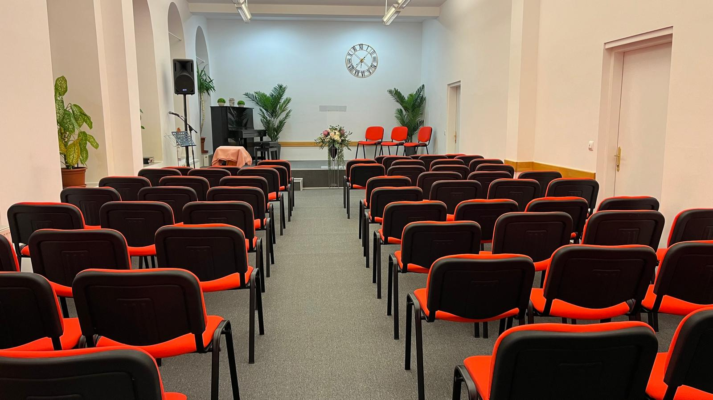

Acasa
Live
Locatie

Iuda 1:3
„Preaiubiţilor, pe când căutam cu tot dinadinsul să vă scriu despre mântuirea noastră de obşte, m-am văzut silit să vă scriu ca să vă îndemn să luptaţi pentru credinţa care a fost dată sfinţilor o dată pentru totdeauna.“
Programul bisericii:
JOI (studiu biblic)
19:00 - 21:00
DUMINICA (serviciu divin)
10:00 - 12:30
18:00 - 20:00